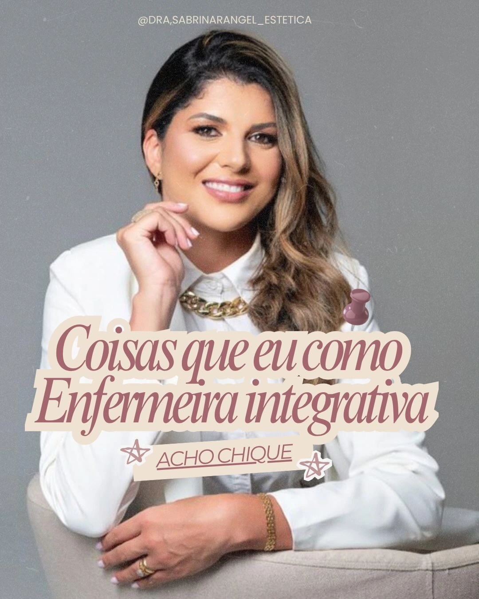

Com as três respostas
Estratégia
A Dra. Sabrina propõe um caminho só seu: o que faz sentido, em que ordem e o que não é indicado para você. Presencial ou on-line.
Começar pela avaliaçãoDra. Sabrina Rangel · Enfermeira integrativa · Tubarão/SC e on-line
Estética integrativa com avaliação individual: o seu histórico, as suas necessidades e o seu objetivo vêm antes de qualquer estratégia.
Escolha o seu caminho
Mensagem pronta: “Olá, Dra. Sabrina! Gostaria de agendar uma avaliação presencial em Tubarão.”
O princípio
Quando uma amiga conta que fez um procedimento e gostou, é natural querer o mesmo. Mas o que foi indicado para ela partiu do histórico, das necessidades e do objetivo dela.
Na estética integrativa, o ponto de partida é você: primeiro a conversa e a avaliação, depois a escolha do que faz sentido.
“Minha amiga fez e foi ótimo. Mas isso não significa que seja indicado para você.”
A ordem certa
Role a página ou use os botões. A estratégia só abre depois das três etapas.
O que já foi feito até aqui?
O que você já fez, como está a sua saúde, o que usa e como foram os cuidados até aqui.
O que pede atenção hoje?
O que incomoda você hoje e o que realmente pede atenção, olhando o conjunto e não um ponto isolado.
Aonde você quer chegar?
Onde você quer chegar, no seu tempo e do seu jeito, com expectativas conversadas com clareza.
Com as três respostas
A Dra. Sabrina propõe um caminho só seu: o que faz sentido, em que ordem e o que não é indicado para você. Presencial ou on-line.
Começar pela avaliaçãoEtapas descritas em termos gerais, a validar com a Dra. Sabrina.
Frentes de cuidado
Lista em construção, a confirmar com a profissional. A indicação de cada cuidado depende da avaliação.
Destaque do perfil. Se é indicada para você, e de que forma, quem diz é a avaliação.
Citados nas publicações. Quais procedimentos fazem sentido, e para quem, a Dra. define depois de avaliar.
Um olhar para o conjunto: histórico, rotina e objetivo, presencial em Tubarão ou on-line.
Presencial ou on-line
Presencial

On-line
Fluxo descrito em termos gerais; regras de agendamento, valores e serviços disponíveis em cada formato a confirmar.
Dúvidas
Contato
Mensagem pronta
“Olá, Dra. Sabrina! Gostaria de agendar uma avaliação presencial em Tubarão.”